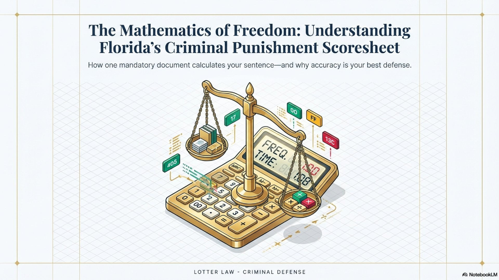
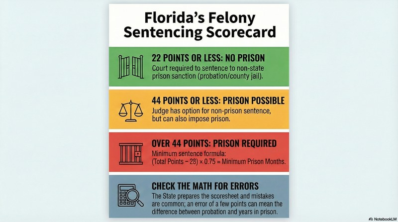
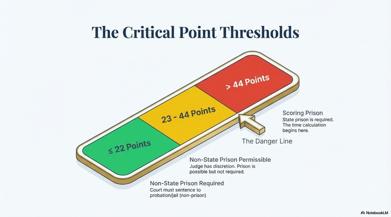

Florida's Criminal Punishment Scoresheet: What It Is and Why It Matters for Your Case

If you're facing felony charges in Florida, you may have heard the term "scoresheet" or been told you've "scored prison." But what does that actually mean? Florida's Criminal Punishment Code Scoresheet is the document that determines what sentence the judge can impose—and understanding it could be the difference between prison time and walking free.
What Is the Criminal Punishment Scoresheet?
The Criminal Punishment Scoresheet is a standardized form (Florida Rule of Criminal Procedure 3.992) that calculates a point total based on the current charges, prior criminal history, victim injury, and other factors. This point total determines the minimum and maximum sentence a judge can impose.
The scoresheet system, known as the Criminal Punishment Code, has been in effect since October 1, 1998. Every felony case in Florida requires a completed scoresheet before sentencing.
Key Point
The State Attorney's Office prepares the scoresheet, but your defense attorney has the right to review it for accuracy. Errors on the scoresheet can result in an illegal sentence—and errors happen more often than you'd think.
How Points Are Calculated
The scoresheet assigns points based on several categories:
- Primary Offense: The most serious current charge, scored at its offense level
- Additional Offenses: Other charges in the same case
- Victim Injury: Points added for physical harm to victims (4 points for slight injury up to 240 points for death)
- Prior Record: Points for previous felony and misdemeanor convictions
- Legal Status Violations: Points if you were on probation, parole, or other supervision when the offense occurred
- Community Sanction Violations: Points for violating probation or community control
Florida's 10 Offense Severity Levels
Florida categorizes all felony offenses into 10 severity levels, with Level 1 being the least severe and Level 10 being the most severe. Each level corresponds to a specific number of points:
| Level | Primary Points | Additional Points | Example Offenses |
|---|---|---|---|
| Level 1 | 4 | 0.7 | Petit theft (3rd+ offense), worthless checks |
| Level 2 | 10 | 1.2 | Possession of cannabis (20g+), trespass |
| Level 3 | 16 | 2.4 | Grand theft (3rd degree), DWLS (habitual) |
| Level 4 | 22 | 3.6 | Aggravated assault, sale of cannabis |
| Level 5 | 28 | 5.4 | Burglary (unoccupied), possession of cocaine |
| Level 6 | 36 | 18 | Grand theft auto, battery on LEO |
| Level 7 | 56 | 28 | Robbery, aggravated battery, trafficking |
| Level 8 | 74 | 37 | Armed robbery, home invasion robbery |
| Level 9 | 92 | 46 | Sexual battery, attempted murder |
| Level 10 | 116 | 58 | First-degree murder, capital sexual battery |
The Critical Point Thresholds
Your total scoresheet points determine what sentence is possible. There are several critical thresholds you need to understand:

22 Points or Less: Non-State Prison Required
Under F.S. 775.082(10), if your total points are 22 or less, the court must sentence you to a non-state prison sanction (probation, county jail, etc.) unless the offense is specifically excluded from this provision.
44 Points or Less: Non-State Prison Permissible
If your total points are 44 or less, the lowest permissible sentence is any non-state prison sanction. The judge can impose probation or county jail—but prison is also possible.
More Than 44 Points: "Scoring Prison"
If your total points exceed 44, you've "scored prison." The minimum prison sentence is calculated using this formula:
For example, if you score 60 points: (60 - 28) × 0.75 = 24 months minimum.
363+ Points: Life Sentence Possible
If your total points reach 363 or more, the judge may impose a life sentence.

What Is a Downward Departure?
A downward departure is when the judge sentences below the calculated minimum. This is only allowed when there are legally valid reasons that "reasonably justify" a lower sentence.
Florida Statute 921.0026 lists the permissible grounds for downward departure, including:
- ✓ The defendant was an accomplice with no significant role
- ✓ The victim was an initiator or willing participant
- ✓ The defendant requires specialized treatment for mental illness or addiction
- ✓ The offense was committed in an unsophisticated manner and was an isolated incident
- ✓ The defendant cooperated with the state
- ✓ The defendant's age or infirmity makes prison an excessive hardship
- ✓ The defendant has no prior criminal record and the offense was non-violent
Important Note
Downward departures are prohibited for certain offenses, including offenses with mandatory minimum sentences. The judge must also make written findings explaining the departure.
Drug Court and Treatment Programs
If your total points are 60 or less and you qualify for treatment, the court may place you in a treatment-based drug court program under F.S. 948.20 and 397.334(3). This provides an alternative to incarceration for defendants with substance abuse issues.
Successfully completing drug court typically results in charges being dismissed or significantly reduced—making this a valuable option when available.
Common Scoresheet Mistakes
Scoresheets are prepared by the State Attorney's Office, and mistakes happen. Common errors include:
- Wrong offense level: Misclassifying the severity of a charge
- Prior record errors: Including convictions that shouldn't count (withholds, sealed records)
- Double-counting: Scoring the same prior conviction multiple times
- Victim injury miscalculation: Assigning wrong injury points
- Legal status errors: Incorrectly determining supervision status
Your defense attorney should carefully review every line of the scoresheet. An error of just a few points can mean the difference between probation and years in prison.
How a Defense Attorney Can Help
The scoresheet isn't just about math—it's about advocacy. A skilled criminal defense attorney can:
- Verify accuracy: Review every entry for errors that inflate your score
- Negotiate charges: Reduce or dismiss charges to lower offense levels
- Argue departure grounds: Present evidence supporting a downward departure
- Pursue alternatives: Advocate for drug court, diversion, or treatment programs
- Challenge enhancements: Contest improper victim injury or legal status points
The Bottom Line
Florida's Criminal Punishment Scoresheet directly determines what sentence you'll face. Understanding how it works—and ensuring it's calculated correctly—is essential to your defense.
If you've been told you're "scoring prison," that's not the end of the conversation. There may be grounds for a downward departure, errors on the scoresheet, or opportunities to reduce charges before sentencing.
Don't accept a sentence based on a scoresheet you haven't verified. Get an experienced criminal defense attorney to review your case and fight for the best possible outcome.
Need Help Understanding Your Scoresheet?
If you're facing felony charges in Orlando or Central Florida, I'll review your scoresheet for free and explain exactly what you're facing—and what we can do about it. Call now for a confidential consultation.
Related Articles
The Withhold Wildcard: Drug Offender Probation
How withholds of adjudication can help avoid a conviction.
BlogPrior Withholds Are Not Convictions
Understanding how withholds affect your criminal record.
Need Legal Help?
If you're facing criminal charges in Central Florida, an experienced defense attorney can make the difference. Get a free consultation to discuss your case.
Contact Lotter Law at 407-500-7000 for a free consultation.

Jeff Lotter
Criminal Defense Attorney | Former State Trooper
Jeff Lotter is an Orlando criminal defense attorney and former Florida Highway Patrol trooper. He uses his law enforcement background to build stronger defenses for clients facing criminal charges.